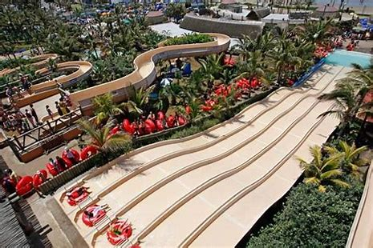
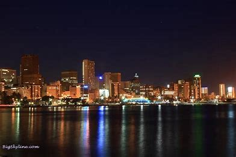
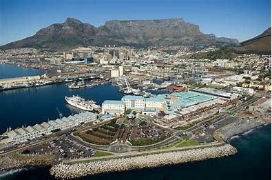

Overnight? Stay in Umhlanga KwaZulu Natal is a world in one province: to the North of Durban you will find the best of African game reserves and pristine beaches, to the West lie the majestic Drakensberg and temperate Natal Midlands while to the South there await superb golf...
Share: Durban's sweeping waterfront promenade, the Golden Mile, is a legendary tourist magnet and a great starting point for a tour of the city. Long blond beaches lure swimmers, surfers, and anglers, while the bustling promenade feels like Miami Beach with its high-rise hotels, shops, restaurants, and flashy entertainment complexes. Visitors can stroll along here or rent a bike or Segway. Besides the beach scene, top attractions along this stretch include uShaka Marine World, a wonderland of sea-themed attractions; Moses Mabhida Stadium; and Mini Town, a tiny replica of Durban with a miniature rail network, airport, and harbor scene.
   Home